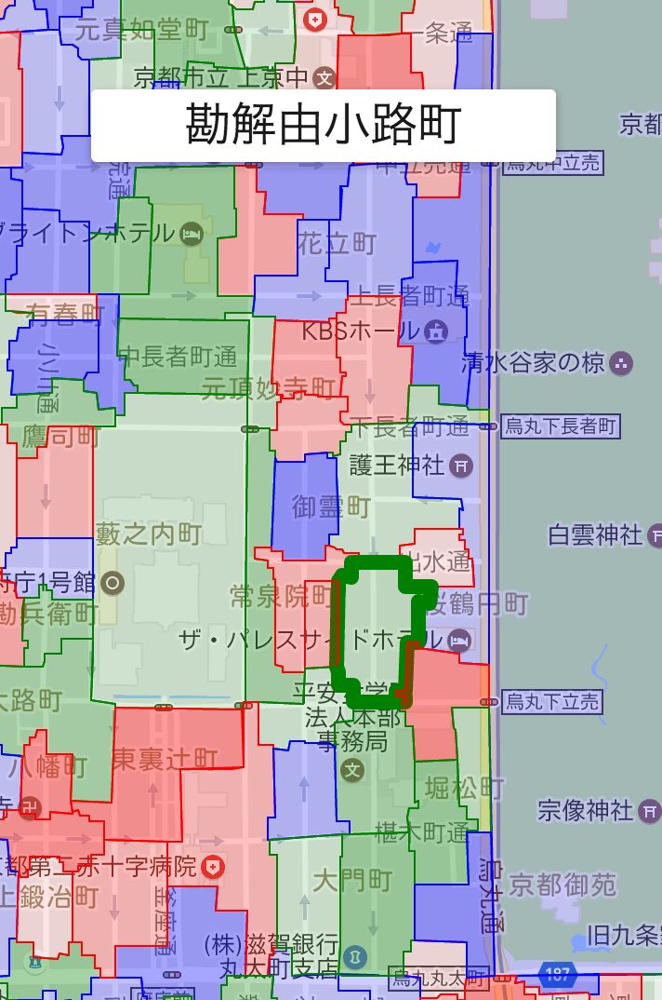

職務経歴書
職務要約
京都大学大学院で化学化合物における最適化問題のモデリングに関する研究をしながら、
株式会社●●●●●にて給与体系の設計プロジェクトに従事。データ分析により設計すべき構造を特定し、
給与計算システムを開発。社内CRMと連携した給与計算システムの導入で作業時間を80％削減する成果を出した。
新卒採用の株式会社●●●●では、新規事業展開のための事例プロトタイピングに携わる。位置情報に関するエンジニアリングだけでなく、
マーケティング調査や営業活動にも自ら関わることでプロジェクトを円滑に進めた。●●●●●●●株式会社では、
データ分析業務システムにおけるロジックのリバースエンジニアリングとリプレイスに従事。
2017/05 - 現在: ＊＊＊＊＊＊＊株式会社
職務：DBエンジニア
従業員数：40名 業種：不動産 雇用形態：正社員（中途採用）
データ分析業務システムにおけるロジックのリバースエンジニアリングとリプレイス
チーム6名のメンバー / データアーキテクト / データサイエンティスト
業務のスケーラビリティを考慮した再設計/最適化
多くのクエリ実行における数値計算ロジックを集約し、行列計算(
Pythonの
numpyライブラリ)に帰着させました。
データベース移行/検証
オンプレミスから
AWSへ移行。
MS SQL,
MySQL
自社ASPのリプレイス
オンプレミスから
AWSへ移行。ウェブスクレイピングしたデータを前処理、加工するデータアーキテクト職を担当。
チームジョイン時にバッチ処理(
PHP)を引継ぎ、リプレイス対象のASPを設計/実装しました。
DBやWeb画面の数値からリバースエンジニアリングし、リプレイス作業を円滑に進めました。
Jupyter NotebookによりDBのデータを集計してヒストグラムや地図で可視化し、
データ検証/評価を効率的に進めました。
2016/04 - 2017/04: 株式会社＊＊＊＊
職務：マーケティング開発エンジニア
従業員数：100名 業種：Web地図 雇用形態：正社員（新卒採用）
データ可視化の開発
（１）オンプレミスのGISソフトウェアQGISの到達圏を表示する経路探索プラグイン（左画像）を調査/解析し
Ruby on Rails、PostgreSQL(PostGIS, pgRouting)で地理空間DBのWebAPIとして設計/実装しました。
また、位置情報ビジュアライゼーションのマーケティング調査を行い既存顧客へ開発した機能を提案する営業活動も行いました。
（２）D3.js, C3.js, Leafletによる既存APIのビジュアル表現活用の事例プロトタイピングを行いました。
（チーム全体でアイデア出しからWebアプリ実装まで3ヶ月で20個.スクラム開発.）
また、社内ノウハウを積極的に吸収し自らも発信しようと日頃から心がけており、
勉強会でビジュアル表現活用を発表して成果物をチーム内だけに留めず社内で共有しました。
Androidアプリゲームの改修
研修の一環として、Androidアプリゲーム (
Java,
Kotlin,
Firebase)のUIUX調整、
バグ解消など改修・テスト作業を遅延なく実行しました。
2014/12 - 2016/03: 株式会社＊＊＊＊＊
職務: 給与BPRコンサルタント及びシステムエンジニア
従業員数：90名 業種：屋外広告業 雇用形態：アルバイト（大学院在学のため）
給与体系の設計
会社特有リスクを軽減し、業界特有の慣習を反映した給与体系を設計する社長直轄プロジェクトを担当しました。
SQL Serverから抽出したデータを分析することで社内で共有されていなかった会社特有リスクを明確にして、設計モデルを組み立てました。
社内CRM/SFAと連携した給与計算システムの開発
もともとはエクセルの給与計算式を設計するプロジェクトでしたが、社長へ給与BPRを企画提案して部門間にまたがるプロジェクトを担当しました。
Delphiと
SQL Serverで社内CRM/SFAと連携した給与計算システムを開発して、作業時間を８０％削減しました。
また、社内CRM/SFAを開発・保守していたSI会社と打ち合わせを重ね、スケジュール管理、折衝・交渉で成果を出しました。
業務を円滑に行うためには、社内文化を学ぶことの重要性を学びました。業務を行う上では、他部署の社員との連携がどうしても必要になってきます。部署ごとに違う専門用語を使っている場合もあり、用語の使用意図を正確に把握することで業務連携のズレを最小化することができると身をもって学びました。
2013/09 - 2014/03: 株式会社＊＊＊＊＊＊＊＊＊＊＊＊＊
職務: Webエンジニア
従業員数：70名 業種：サーバー管理 雇用形態：アルバイト（大学在学のため）
社内管理ツールの改修
Web基礎技術を習得。
HTML5,
CSS,
JavaScript,
PHP,
MySQLの指導を先輩から受けながら、社内管理ツールを改修しました。
趣味で作成しているもの
プログラミング言語やフレークワークに対して柔軟に対応し、素早く学習できます。
例えば、
京都町名マップ(Web版)です。これらのアプリを実装するにあたり、最適なモデル構造を考えて
Python,
Node.jsでデータ加工しました。

Javascript, Golang, Google Cloud Platform
スキル一覧
| GIS |
【GUI】QGIS, Mapbox Studio, CARTO
【DB】PostgreSQL, PostGIS, PgRouting
【Python】geopandas,pyproj
【API】(1) Google Maps iOS, Android, JS (2) Mapbox GL JS, iOS (3) Mapzen JS, Trangram JS |
| アプリ |
Android (Java, Kotlin)
iOS (Swift)
Delphi |
| ウェブフロントエンド |
HTML5 + CSS
JS (D3.js, C3.js, jQuery, Leaflet) |
© 2017-2018 @plute in iGitHub ALL RIGHTS RESERVED